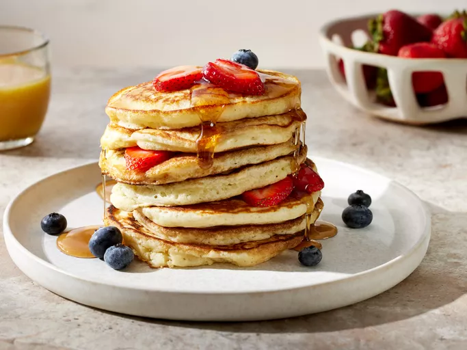

Fluffy Pancakes

Description
Need a fluffy pancake recipe? This one is just right, especially when
there's plenty of butter and syrup. Make it extra special with berries and cream!
Ingredients
- 3/4 cup of milk
- 2 tablespoons white vinegar
- 1 cup all-purpose flour
- 2 tablespoons white sugar
- 1 teaspoon baking powder
- 1/2 teaspoon baking soda
- 1/2 teaspoon salt
- 1 egg
- 2 tablespoons butter, melted
- cooking spray
Steps
-
Gather all ingredients
-
Combine milk and vinegar in a medium bowl and set aside
for 5 minutes to make sour milk.
-
Combine flour, sugar, baking powder, and salt in a large
mixing bowl.
-
whisk egg anmd butter into soured milk
-
pour flour mixture and whisk until lumps are gone
-
Heat a large skillet over medium heat, and coat it with
cooking spray. Pour 1/4 cupfuls of batter onto the skillet, and cook
until bubbles form and the edges are dry, about 2 to 3 minutes.
-
Flip with a spatula, and cook until browned on the other side. Repeat
with remaining batter